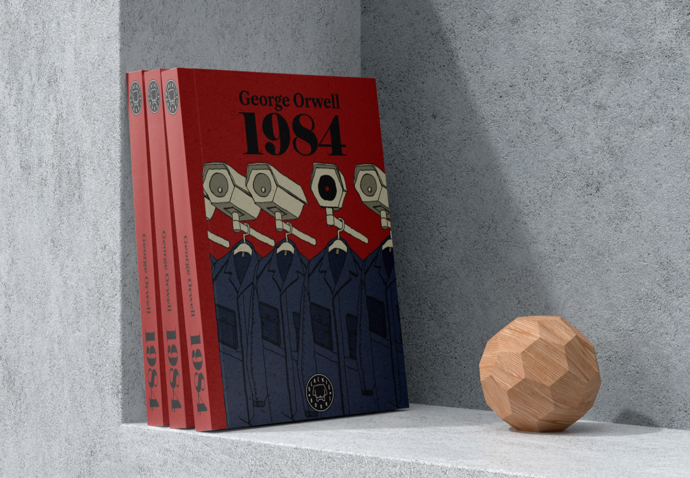

01-Portada 1984
Año: 2022
Al leer 1984, me impactó como George Orwell transmitío el sentimiento de ser vigilado: no solo a través de las cámaras y los micrófonos, también a través de las personas que comparten el día a día del protagonista.
Este concepto informa esta propuesta de portada. Las cámaras de videovigilancia se transfroman en ciudadanos uniformados, que vigilan al propio espectador.